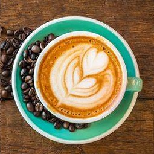

Welcome to Mug and Mingle
Hello Coffee Lovers!!! Welcome to Mug and Mingle, your go-to destination for exceptional coffee and a
cosy atmosphere.
Whether you're in the mood for a bold espresso, a creamy latte, or something unique, we've got a
blend for every taste.
We take pride in serving freshly brewed coffee made from the finest beans, carefully selected for
their rich flavour and quality.
Our café is the perfect spot to relax, work, or catch up with friends.
Visit us today and let us make your coffee experience unforgettable...
Try our Artisan Coffees

At our coffee shop, we see every cup of coffee as a masterpiece, a testament to the artistry and
dedication that define our craft.
We take pride in sourcing our beans from the world's finest coffee farms, where sustainability,
ethical practices, and an unwavering commitment to quality are at the heart of everything we do.
Each bean is meticulously handpicked at its peak, ensuring only the best make their way to your
cup.
Once selected, our beans undergo a thoughtful roasting process, tailored to enhance their
natural flavours and unlock their full potential.
The result is a perfect harmony of aroma, taste, and texture that sets our coffee apart.
Our brewing process is no less meticulous. Whether you savour the bold intensity of an espresso,
the nuanced depth of a pour-over, or the velvety richness of a cappuccino, every sip reflects
our dedication to precision and passion.
Each brew is a symphony of flavours, crafted to bring out the best in every bean.
When you choose our coffee, you're not just enjoying a beverage; you're embarking on a journey
through the rich stories of the farmers, roasters, and baristas who pour their heart into every
step.
Experience the extraordinary difference of artisan coffee, where every sip is a celebration of
care, craftsmanship, and uncompromising quality.